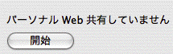

ここはあなた専用の Web サイトです。Mac OS X パーソナル Web 共有を使うと、インターネットで — または、会社や学校のローカルエリアネットワークで — お使いのハードディスクのフォルダから Web ページを公開したり、ファイルを共有したりできるようになります。 作成した書類はインターネットで表示できます — または、ローカルエリアネットワーク内で限られた人たちだけに公開することもできます。 Mac OS X パーソナル Web 共有がこの操作を簡単にしてくれます。 Mac OS X パーソナル Web 共有の操作は簡単です。このページ（「index.html」と呼ばれるファイルで、ホームフォルダ内の「サイト」フォルダにあります）に変更を加えたり、別の HTML ページを好きなように作成したりして、オリジナルの Web サイトを制作できます。 オンラインに切り替えたら、Mac OS X パーソナル Web 共有を入にして、Web アドレスをほかの人達に送ります。 操作はたったこれだけです。これだけで、ページを表示する準備はすべて完了です。 |
||
|
だれでも HTML が作成できる？
HTML について勉強しなくても、HTML 書類を簡単に作成できる方法があります。HTML の使いかたを勉強する必要はありません。 たとえば、Microsoft Word や AppleWorks 6 など、最新のワードプロセッサアプリケーションでは、数回マウスでクリックするだけで HTML を実際に生成します。 HTML — Hypertext Markup Language という英語の略語 — は、Web 管理者やデザイナーが、テキストやグラフィックスをインターネット上で公開するために使用するもので、あらゆる Web ブラウザで読める形式です。 たとえば、Microsoft Word の最新バージョンの場合、必要な操作は、公開したい書類を開いて、「ファイル」メニューから「Web ページとして保存」を選ぶだけです。 Word では、インターネット上で公開できる HTML ページとして保存します。 AppleWorks6 では、「ファイル」メニューから「別名で保存」を選択し、次にポップアップメニューから「HTML」を選びます。その後、ページを保存したい名前を入力して、「保存」ボタンをクリックします。このように HTML 書類は簡単に作成できます。 Apache Web サーバ Mac OS X パーソナル Web 共有についてもう一つ知っておいていただきたいことがあります。それは、サーバソフトウェアとして、Mac OS X パーソナル Web 共有が非常に安定しているということです。これは、Mac OS X パーソナル Web 共有がその土台として Apache Web サーバを利用しているためです。Apache Web サーバは、Mac OS X の基盤となるモダン Darwin コアファウンデーションを構成する多数の業界標準テクノロジーの 1 つです。 一言で表現すれば、Apache は、絶え間なく進化を続け、しかも完全に無償で提供される頼もしいサーバソフトウェアということになります。 オープンソースの動きから生まれた珠玉のソフトウェアの 1 つである Apache は、だれもが独占できないという意味で無償で提供されています。基本的に、プログラマーには、入手したソースコードに必要と思われる変更を加える自由が与えられています — ただし、このような自由が与えられるのは、ほかのプログラマーにも彼らが入手したソースコードに変更を加える同様の権利を認める場合に限られます。 Apache サーバの開発は、もともとイリノイ州立大学スーパーコンピューティング・アプリケーション・センターのプロジェクトとしてスタートしました。その後、Apache は、オープンソースコミュニティのメンバーたち (彼らは Mac OS X のコア部分の開発にも協力してくれました) によって絶え間なく改良され、強化されてきました。Apache サーバは、その堅牢な安定性が高く評価され、現在では、アップルの Web サイトを含めて、インターネット上の Web サイトの半数以上 — 特に、クールでアクセス件数の多い Web サイトのほとんどすべて — で稼働していますが、それが今、あなたのものにもなりました。 Web ページを提供する方法の詳細については、Apache のマニュアルを参照してください。 |
パーソナル Web 共有クイックスタートガイド
1.Web サイト用の HTML ページを作成したら、ホームディレクトリ内の「サイト」フォルダにドラッグします。 今読んでいるこのページのテキスト、グラフィックス、リンクを独自のコンテンツに置き換えて、自分専用の紹介ページを作成することもできます。ページやグラフィックをリンクさせる方法についてはアプリケーションの指示にしたがいながら、ほかの HTML ページを作成してください。 2.ネットワーク接続が確立されていることを確認しますサポートが必要な場合は、ネットワーク管理者にお問い合わせください。  3.「システム環境設定」を開き、「共有」をクリックします。「パーソナル Web 共有」を選び、「開始」をクリックします。 4.「共有」環境設定のサービスリストの下にある自分の Web サイトのアドレスをメモしておきます。表示されている通りに正確にアドレスをコピーしてください。 このアドレスを会社や学校のネットワークに接続している同僚や友人に知らせてください (そのとき、最後に「/」を付けることも忘れずに伝えてください)。このアドレスを知っている人は、自分の Web ブラウザにこのアドレスを入力し、あなたのサーバにアクセスして、公開されている書類を見ることができます。 |
|